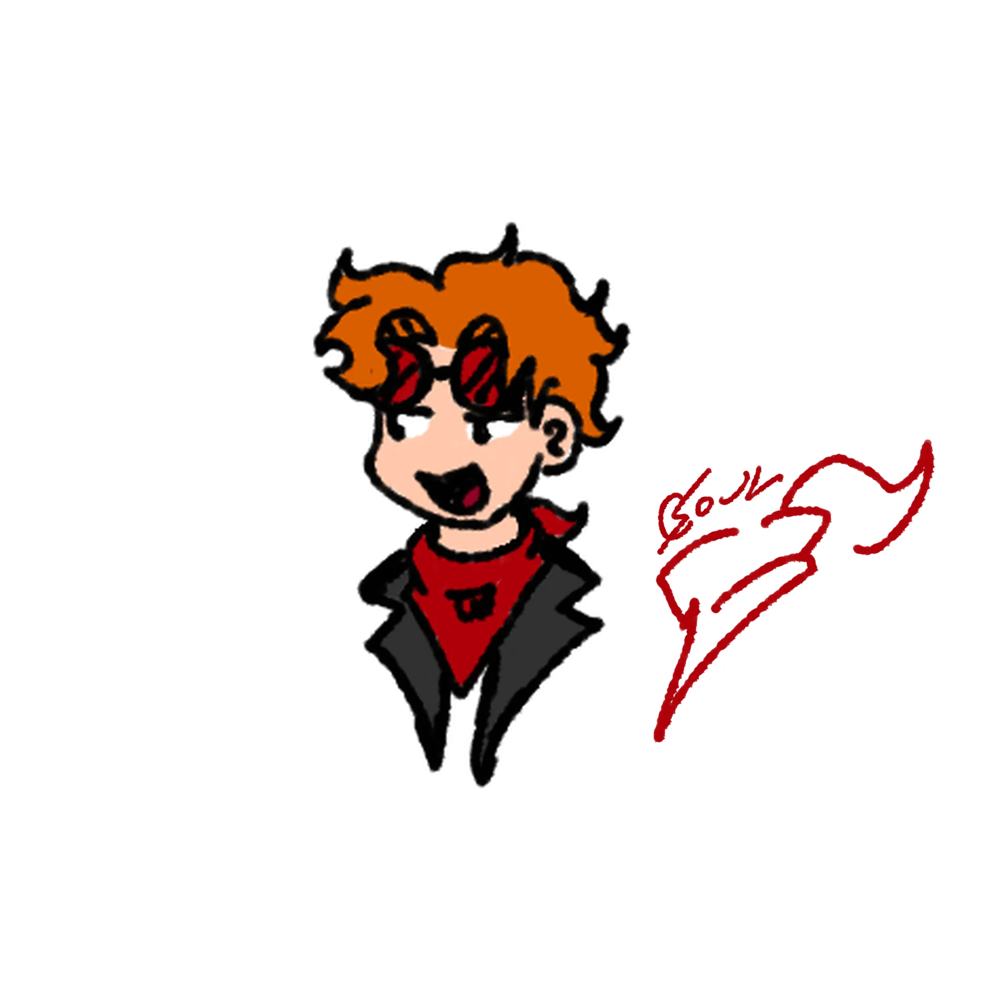
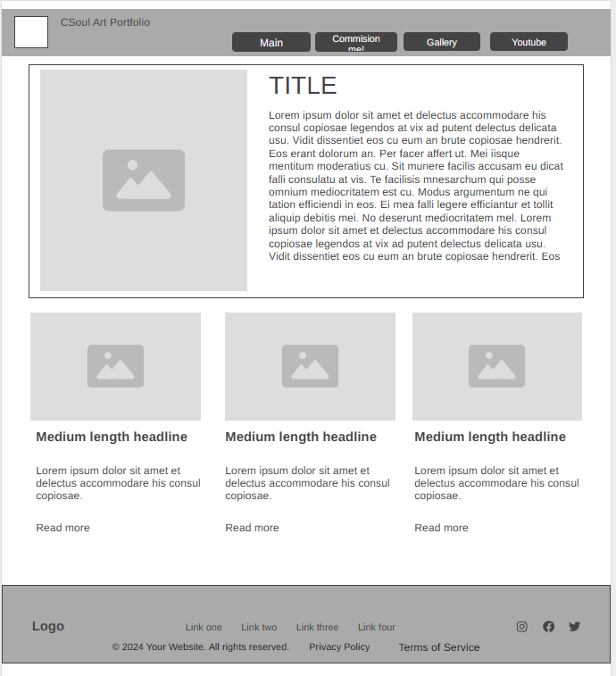
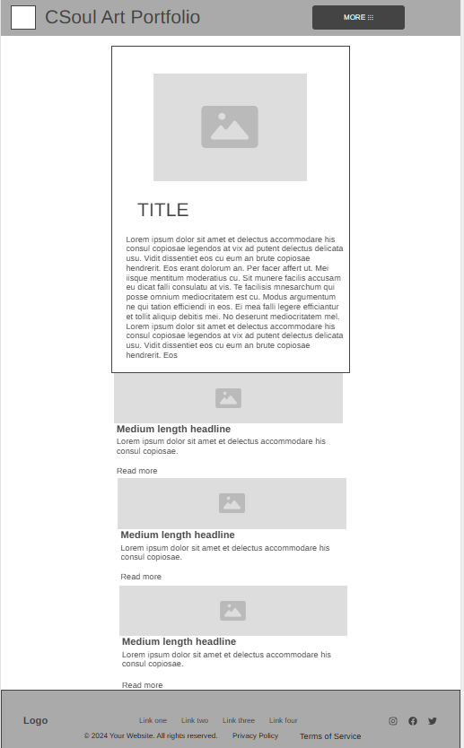

Capoliner Soul
Yeah thats what I do I draw and I make videos sometimes I hate to deal with the overpolitization of entertainment sometimes I want just to live my life without thinking and also not worrying about who I'm supporting while I watch my series on two guys punching each other, i love character writting and coherensy. but... Just I dont want to see politics in my series man. unless is part of the main plot if not go away.
Latest video!
Last Stream
Most viewed!
1. Site Name
Name: CapolinerSoul Studio (capolinersoul.com)
Reason for Selection: This uses the unique artist identity 'CapolinerSoul' to establish immediate branding across the web, aligning with existing social accounts and YouTube presence for seamless recognition.
2. Site Purpose
The purpose of this website is to serve as a professional digital art hub. It showcases high-quality illustration galleries, displays up-to-date commission availability and pricing tiers, and channels traffic directly to relevant external content like speedpaints on YouTube.
3. Target Audience Scenarios
- Scenario 1: A casual visitor arrives from YouTube looking to browse a clean, static, high-resolution collection of the art pieces featured in recent video tutorials.
- Scenario 2: A potential client wants to look up open commission statuses, evaluate structural pricing tiers, read terms of service, and find instructions on how to secure an open slot.
4. Color Scheme
- Primary Background (#1a1a1a): Used for the main body canvas to provide a dark framework that allows vibrant digital colors to stand out.
- Accent Color (#ff5e62): A vibrant coral red used for main titles, primary navigation links, active selections, and interactive buttons.
- Main Text (#f5f5f5): An off-white shade applied across body paragraphs to ensure smooth readability against dark backdrops.
5. Typography
- Heading Font: 'Helvetica Neue', Arial, sans-serif — Geometric and bold. Used to cleanly style headings, navigation links, and structural identifiers.
- Body Font: 'Georgia', serif — Classic and legible. Applied to text blocks, summaries, descriptions, and informational paragraphs.
6. Wireframe Layout Notes
Desktop Layout (Large Viewport):

Mobile Layout (Small Viewport Strategy):
